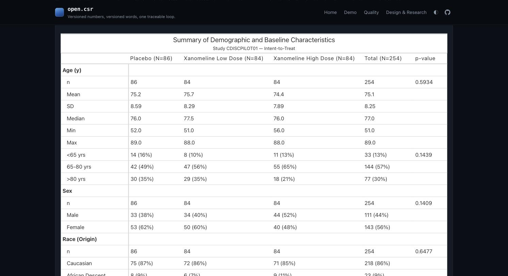
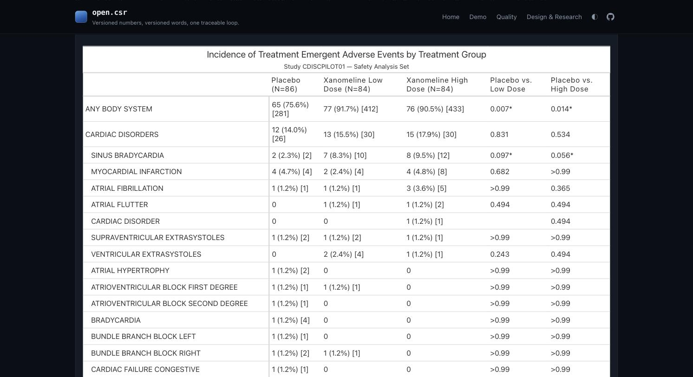
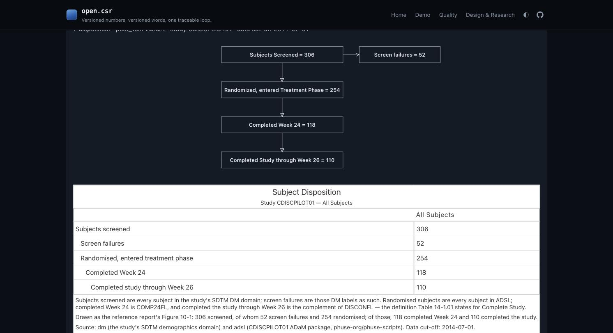
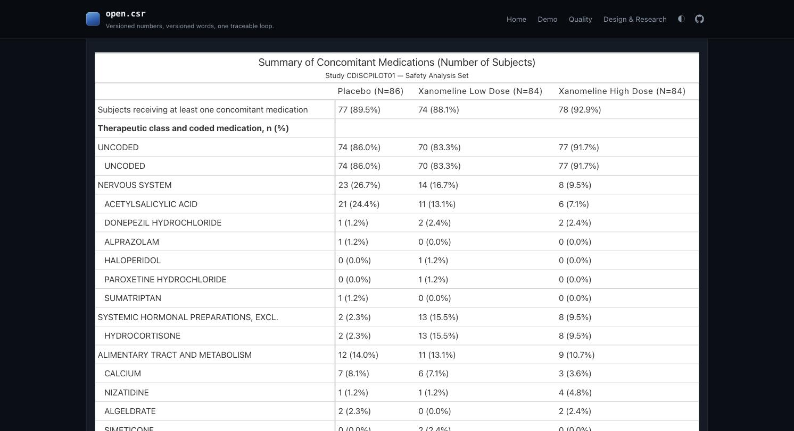
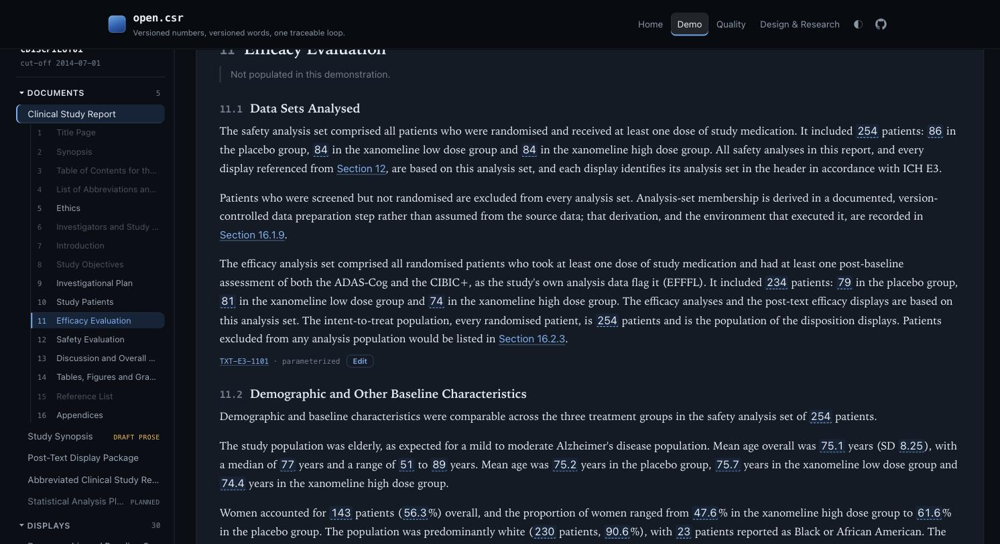
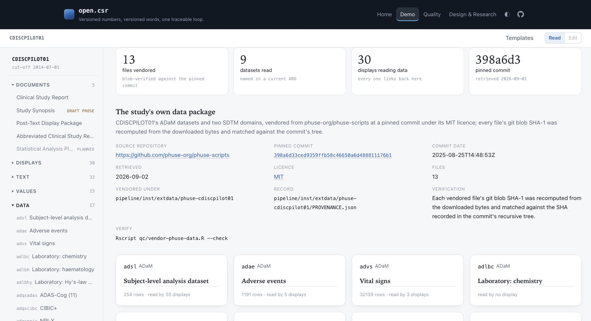
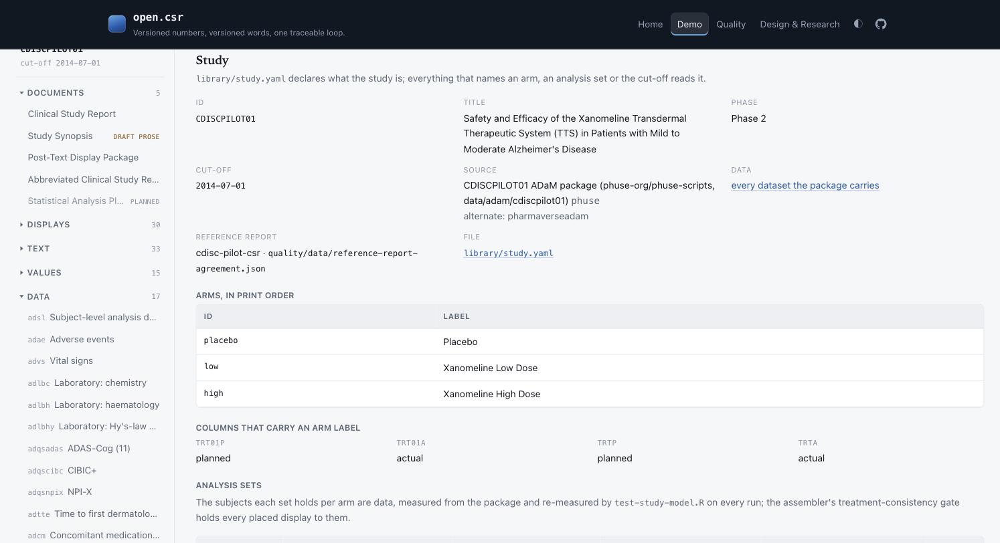
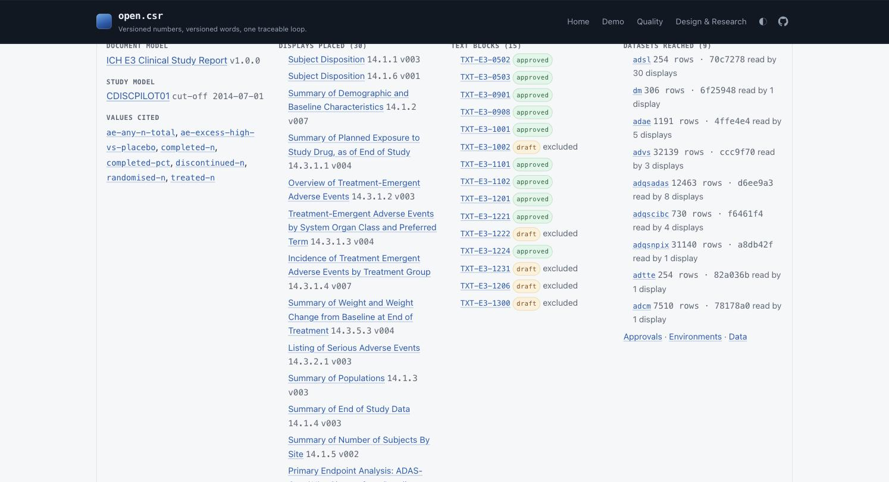
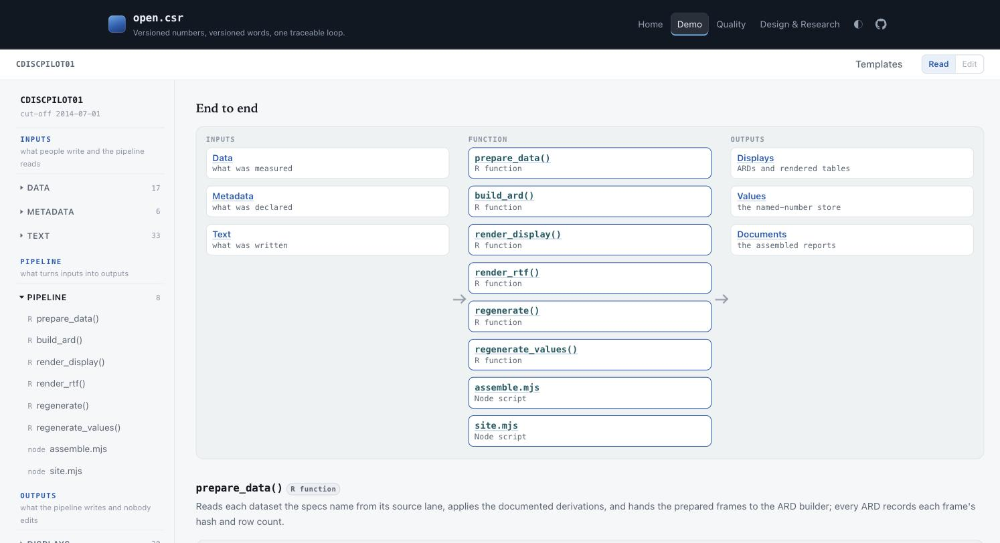
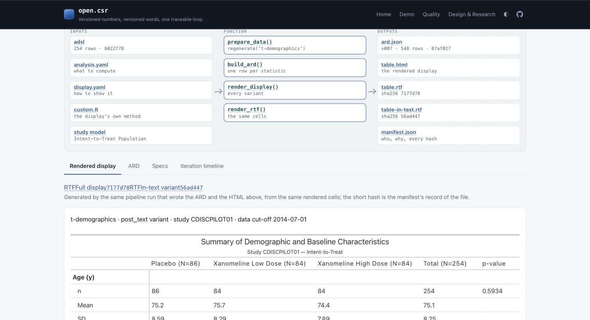

v0.3.0 filled the report — twenty-six displays, an efficacy section, every one measured against the study's own 2006 report. It also described two versions of the study: six displays read a re-derived data packaging that puts twelve subjects on a different arm than the study's own package does, so section 10 and section 14 of the same document disagreed about how many people were treated. v0.4.0 reads the study's own package everywhere, declares the study once, and fails the build when two displays disagree about it — and carries five more of the reference report's displays into the library, cell for cell. And the sidebar says where every number came from: two new views, Data and Metadata, with every artifact linking what it was made from both ways — the questions users asked on 2 September, folded into this release. Then, on the same day, the explorer regrouped to read as the pipeline and every element gained its flow. Every capture below is from the candidate's own tree; each section links into it.
library/study.yaml now says what the study is: the arms in print order, the columns that carry an arm label, the analysis sets with the flag defining each and the subjects each holds per arm, the cut-off, the source. The pipeline's treatment vocabulary and its analysis-set registry read that file instead of carrying the study in code, and a test re-measures every count in it against the data on every run.
Every analysis results dataset records the population it summarised — analysis set, grouping column, distinct subjects per arm — and the assembler's new treatment-consistency gate holds every placed display to the study model and to every other display in the document. A display whose counts differ is a build error naming the display, the arm and both numbers. The gate was proved before the data lane moved: run against the old results it went red on all six displays.
Read section 10 and then section 14 — the same three numbers →The demographics display moves to the intent-to-treat population and carries the report's Total and p-value columns — one-way ANOVA for a continuous block, Pearson's chi-square for a categorical one — and its rows: age and its groups, sex, Race (Origin), MMSE, duration of disease and its groups, years of education, baseline weight, height and BMI with its groups. All 58 printed lines agree with the 2006 report three ways. Exposure needs no exposure dataset: the pilot's ADSL carries average daily dose and cumulative dose as columns, and the display is rebuilt from them for the safety population and the Week 24 completers.
Race (Origin) is a recode, not a conflict. The assessment that scoped this release read "218 Caucasian plus 12 Hispanic" against "230 White" as the two data copies disagreeing. Both say the same thing — 230 White by race, 12 Hispanic by ethnicity, every one of them White — and the report printed one classification with Hispanic as a category. The display's footnote says so.

Two new displays reproduce the incidence table and the serious-event table: for every system organ class and preferred term, the subjects with a treatment-emergent event, the percentage of the arm, the number of events in brackets, and Fisher's exact test of placebo against each active arm — starred below 0.15, >0.99 when it rounds to one, blank where there is nothing to test. All 254 lines of the incidence table and the 4 of the serious-events table agree three ways with the report, wrapped and truncated labels included.
Four p-values do not: the 2006 program rounded them one thousandth higher than R's exact test (0.2085 printed as 0.209, and three like it). They are recorded as known differences, stated on the display, and held to — the comparison fails if one of them closes or another opens. The report's ordering is measured, not assumed: organ classes alphabetical, preferred terms by high-dose subjects then name, the one rule that reproduces all twenty-four organ-class blocks.

Table 14-1.03 — intent-to-treat, efficacy and Week 24 completer counts per site and arm, small sites pooled under 900 — joins the library and agrees with the report on all 216 cells. Three of the report's in-text tables are now drawn from the section 14 displays' own results rather than declared and left empty: Table 11-1 (demographics as mean and range and percentages), Table 12-1 (terms at 5% or more, flat, title case, an asterisk where the placebo comparison has p < 0.15) and Table 12-4 (weight as n and mean per arm). Each is a variant of the display it summarises, so it cannot disagree with it.
Read section 12 with its in-text tables → subjects by site →The only medication dataset PHUSE publishes for the pilot is a relabelled copy from a folder its own README calls out of place. The study's SDTM CM domain is in the same repository at the same commit; it is now vendored, the analysis dataset is derived from it with the derivation on record, and the derived dataset reproduces every one of the 414 statistics the medication table published from the copy. The study's SDTM DM domain is vendored alongside — all 306 screened subjects, the 52 screen failures the ADaM package does not carry — and with it the report's Figure 10-1 is drawn: 306 screened, 52 screen failures, 254 randomised, 118 completed Week 24, 110 completed the study.


A display is not done when it renders; it is done when three routes land on the same string for every published cell — a recomputation from the vendored transport files that never loads the package, the cell text read back out of the committed rendering, and the report itself, transcribed cell by cell and re-derived from the document at its pinned hash. Any two disagreeing is a build failure, and a self-test perturbs each route to prove the comparison can still fail.
| Reference table | Display | Cells | |
|---|---|---|---|
| 14-1.01 Analysis populations | t-populations | 25 | |
| 14-1.02 End of study | t-end-of-study | 65 | |
| 14-1.03 Subjects by site | t-subjects-by-site | 216 | NEW |
| 14-2.01 Demographics | t-demographics | 290 | RESHAPED |
| 14-4.01 Exposure | t-exposure | 84 | RESHAPED |
| 14-5.01 Adverse-event incidence | t-ae-incidence | 1,270 | NEW |
| 14-5.02 Serious adverse events | t-sae-incidence | 20 | NEW |
| Seven displays, three ways | 1,970 |
The repeated-measures display footnotes five cells that differ from the reference at the last digit, attributed to the Kenward-Roger corrections the pipeline does not implement. The spike refits the same model with {mmrm} using them: it reproduces SAS's REML criterion to every printed digit and moves exactly one of the five cells — the three p-values stay a thousandth below the report's and one standard error still prints 0.55 against 0.56. So Kenward-Roger is not the whole explanation; the pipeline keeps its model-based fit and the footnote now says what was tried and what it found.
Section 11.1 used to say "No efficacy analysis set is defined for this report" — true of the old data lane and false of the study. Its third paragraph is rewritten against the populations table, every count a binding, and carries an approval given in review on 2026-09-02. The text-library gate held the block red until that approval existed.

A sixth view of the study. Every dataset the package carries has a page: where the file came from, byte for byte, at a pinned commit; what the preparation layer did to it; and every display whose current results were computed from it, with the row count and hash that display recorded. The lanes page states which packaging each dataset resolves to and the measured divergences between the two; the package page carries the provenance record and the verification command. A display's header now links each dataset it read to that page with the same hash, so a reader lands on the exact input rather than on a label. Nothing on these pages is typed: they are built from the vendored package's provenance record and the provenance envelope every ARD carries.

A seventh view. The study model as the pipeline reads it: arms in print order, the columns that carry an arm label, every analysis set with its flag and its subjects per arm. The document models with the documents assembled from each. Every display's two specifications with their iteration history and the custom code they share, and every value's declaration. Every text block's tier, version and approval in one list, so the report's readiness is one page. Every distinct R environment an iteration was built in, with the iterations built in it. And the requirement matrices. Each page is read from the file that declares the thing.

A display's header links the analysis set as the study model defines it, its specification history, the environment it was built in, the text blocks that bind it and the values sourced from it. A document opens with what it was built from — its model, its study, every placed display with its iteration, every block with its approval state, every value cited and every dataset reached — and its provenance appendix in 16.1.9 is links rather than text. A text block lists its inputs derived from its bindings beside the displays it declares. A value links the arm it names, the data behind it and the documents citing it. The explorer flags a document whose build failed a gate. The one contract change: the assembler records each document's and each block's derived inputs in the assembled JSON, so the links are computed, not maintained.

Asked for on 2 September while reviewing this candidate. The explorer's collections now sit in three parts in the pipeline's order: Inputs, what people write and the pipeline reads (Data, Metadata, Text); Pipeline, the functions that turn them into outputs, each with a page of what it reads, what it writes, where its code is and every element it produced, by the code's own names; Outputs, what the pipeline writes and nobody edits (Displays, Values, Documents). The application strip follows the same order. Every display, value, text block, document, dataset and pipeline function carries a diagram in three lanes — the inputs it used, the function called, the outputs generated — every box a link and every name real, drawn from the records the pipeline already keeps: the ARD envelope, the manifest, the assembled document's inputs record, the registry.


adcm.xpt.gz copy and its reversal code stay vendored for the derivation check; whether to remove them is a question for this review.